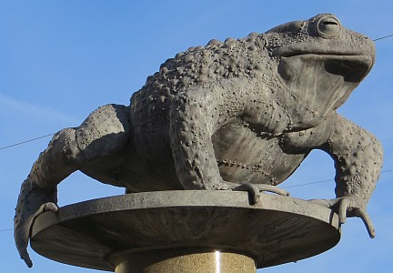

à Portînfé,
Saint Ou.
Moussieu l'Editeu,
À la fîn, don, j'allons aver un Baillyi, dûment assermenté. Et, sans doute, j'éthons bétôt un Avocat-Général; epis i' faudra une élection pour Sénateur. Nou-s-a seu, Moussieu, que l'Député Venables et l'député Dupré sont sûs les rangs, mais nou-s-avait ouï étout que y'avait une chance d'un traisième, car un certain campagnard s'en allait être appréchi par une forte députâtion. Eh bein, j'ai veu plûsieurs membres des Etats, mais i' m'ont tous dit tch'i' n'ont autchune connaissance de chu campagnard, et que la rumeur est fausse. Si ch'est d'même, Moussieu, ch'est grand dommage, car ni l'Sieur Venables, ni l'Sieur Dupré est hardi populaithe dans les pâraisses.
I' n'est pas ocquo trop tard, mais il est temps quand-même que chu candidat se dêcliaithe, et Moussieu, j'connais l'homme tch'i' nos faut. Ch'est notre Connêtablye, lé Sieur Vautchi, et il a toutes les qualifications. Il est hardi intelligent, il est dans la flieur de l'âge, et s'i' voulait prendre, il éthait toute la Campagne de san bord. À Saint Hélyi, je n'sais pas trop, mais y'a hardi d'électeurs là tchi sont contre lé tourisme et tchi n'aiment pas lé Député Venables pûs qu'chonna. J'espèthe, Moussieu, que notre Connêtablye prendra l'affaithe sérieusement, et j'peux l'asseûther que quand veindra l'jour, tout à Portînfé itha en procession à la Salle Pârouaissiale pour voter pour li.
Lé temps est ocquo drôle, Moussieu, et de niet i' n'fait pas d'caud. Ch'est pour chonna que la Merrienne a décidé que n'y a rein comme un homme pour rêcauffer une femme, et dont je r'sommes ensemblye comme j'avions tréjous 'té jusqu'à dernièthement, quand ou perdit la tête pour prèsque une semaine. À ch'teu, Moussieu, je m'lève de bouonne heuthe pour li faithe une tâsse de tais, et quand ou d'valle ou m'prépathe un bouon dêjeuné. Ch'est d'même, man vièr amîn, qu'un homme et sa femme dév'thaient vivre, mais, malheureusement, les jeunes gens d'à ch'teu, ou au mains hardi d'yeux, ont une difféthente idée de chein tchi constitue un mathiage. Même, chutte semaine, j'avons ouï d'une jeune femme de par ichîn tch'a fichi san camp avec un homme mathié parsque s'n homme objectait quand ou fumait chînquante cigarettes par jour. S'oulle attrape un cancer dans la gorge oulle étha d'mandé pour, la garce!

Est'che vrai, Moussieu, que n'y a ni crapauds, ni taupes en Djernézi? Ch'est bein seux tchi n'en manque pas ichîn, et sûs chu point-là, j'mé r'souveins d'l'histouaithe d'la bouonne Jèrriais, y'a bein d's années, quand les femmes s'habillaient un mio difféthément, tchi 'tait à g'nors, un jour, à tchillyi des frâses quand un crapaud se mînt à explôrer ouèsqu'i' n'avait qu'faithe. I' li fit tant d'peux qu'ou fut prête à s'êvanni, et qu'ou n'put jamais r'appréchu de san bétchet d'frâses sans la câsaque de san bouonhomme sûs l'dos. Quant ès taupes, nou veur dithe qu'un bieau jour un grand nombre se mînt à nagi d'la France pour Djernézi mais que quand i' vîntent aupi d'la Coupe à Saint Martîn, i' 'taient si lassées tch'i' n'pouvaient pas aller pûs lien. Je n'sais pas si ch'est vrai, mais ch'là s'pouôrrait car les taupes, comme les femmes, sont de drôles d'animaux.
Et les patates, Moussieu - tchèsqu'en est? Eh bein, i' m'semblye que ch'n'est pas juste qu'un fermyi aie à arrêter si longtemps pour saver combein qu'ses patates ont fait, et quand i' peut s'attendre de r'chever ses sous.
Nou liet dans la gâzette, Moussieu, qu'en Ville y'étha pûs d'police salariée et honorifique par les qu'mîns à l'av'nîn, et que touos les siers y'étha deux Chantgniers à la Stâtion d'Police. Nou-s-espèthe, étout, qu'à la P'tite Cour lé Magistrat n'étha pas d'peux d'envier en prîson chais vacabonds tch'înfestent non seulement la Ville mais étout des parties d'la Campagne. Et pas seulement les mettre en prîson, mais lûs donner du raide travas à faithe. Nou-s-a ouï, dernièthement, que les conditions à la Prîson sont dêgouôtantes, mais les fait est que dans l'pâssé i' 'taient hardi trop bouonnes pour les balloques tchi s'trouvaient là.
Nou-s-a veu étout sûs la gâzette qu'en Australie ils ont dêcouvert tchiquechose tch'empêche la maladie dans le tomates, mais qu'oulle est hardi couôteuse. Ichîn en Jêrri, i' s'en veinnent, les tomates, et si pouvait v'nîn une bouonne achie ou deux, nou les vêrrait pousser bein vite, mais y'éthait étout grand dangi d'maladie. Le fait est qu'agniet nou n'peut craître ni fruit, ni lédgumes sans s'faithe seux que sans tchique m'suthe de protection, nou perdra tout. Quand j'tais mousse nou pliantait sans dangi des arbres à fruit dans les gardîns et contre les muthalles, mais, grand doux, pas agniet! Et ch'n'est pas seulement ichîn, mais partout l'monde.
J'ai un vaisîn, Moussieu, tch'a de drôles d'idées là-d'sus. I' dit que tout a 'té mînt sûs la têrre pour lé bénéfice de l'homme. S'i' trouve une limache dans sa soupe et un colînmachon dans sa caboche, il avale tout, sûs chu principe-là, mais il admet que quand, un jour, i' trouvit le cadâvre d'une souothis dans sa bièthe, i' bu la bièthe mais donnit la souothie à la catte! Et il est prèsque seux que quand Eve et Adam mangîtent la pomme dans l'Gardîn d'Eden, y'avait tchiquechose tchi l's éthait dêcouothagi dans l'mitan s'ils avaient seu.
Tout n'a pas 'té trop confortablye à l'aérodrome hier et agniet et i' pathaît que ch'tait ocquo pièthe en Djernézi. Par conséquent, des chents personnes n'ont pas peut arriver ou sortiu, mais à tchi la faute? J'pouvons faithe bein des choses, Moussieu, mais je n'pouvons pas dirigi l'temps, même avec l'aide de toute la science tchi y'a dans l'monde. Ch'est p't'être aussi bein, car autrement y'éthait du bruit partout. Ch'est chein que j'dis à la Merrienne quand ou voudrait du bé pour san gardîn et le temps n'li conveint pas. Ou gronne, quand-même, mais ch'est une habitude qu'oulle a tréjous yeu, et s'ou la perdrait j'me f'thais seux qu'oulle 'tait malade.
Ch'est tout ch'que j'ai à vos dithe agniet, Moussieu, sinon que man ma dans l'dos n'amende pas, et que yun d'chais jours lé vièrs Ph'lip pouôrrait s'trouver transporté dans l'ambulance à l'hôpita. Si ch'là s'arrive, Moussieu, j'espèthe qu'ou veindrez m'vaie, avec une p'tite boutelle de tchiquechose que j'pouôrrai muchi souos m'n ouôthillyi quand i' n'étha personne par les qu'mîns.
Ph'lip
Viyiz étout:
{kind=link}